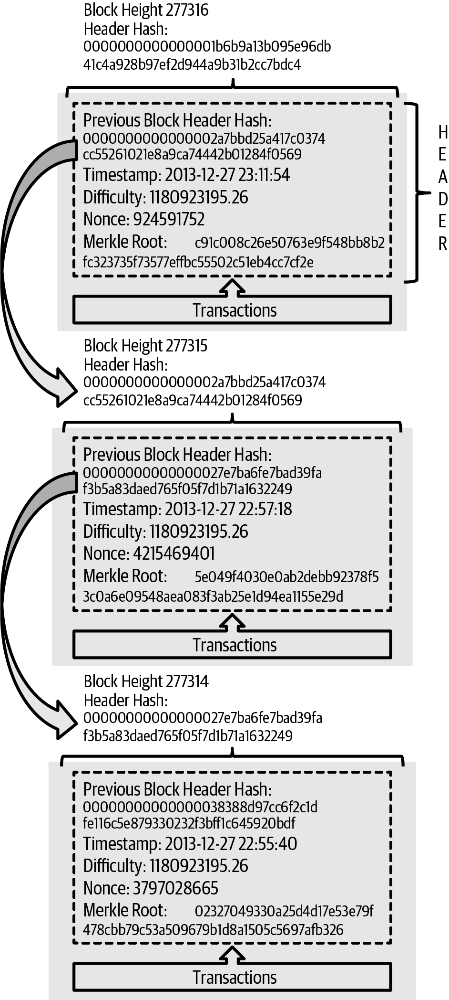
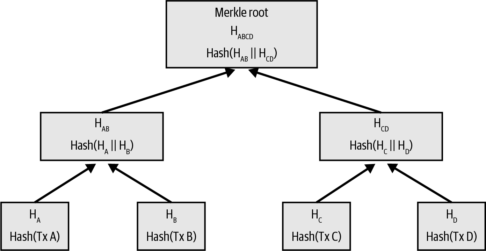
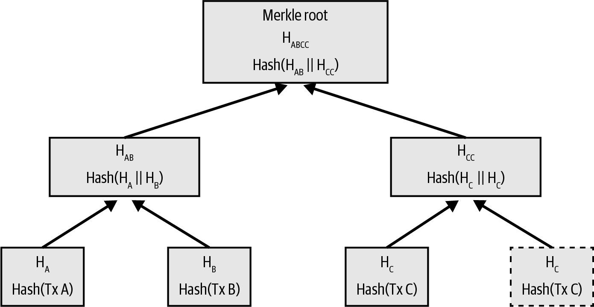
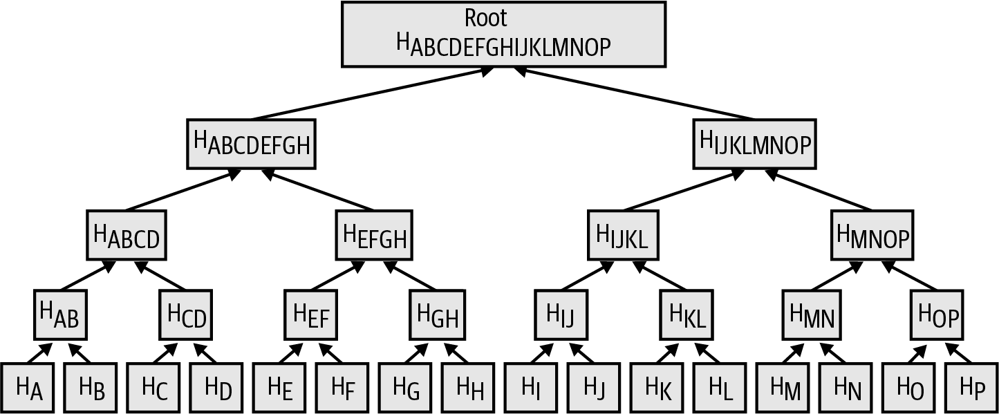
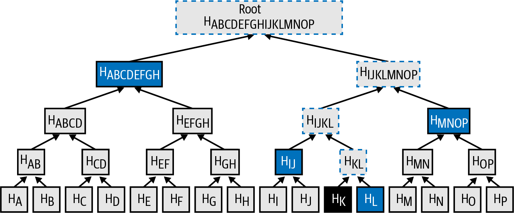

区块链
区块链是每一笔已确认 Bitcoin 交易的完整历史。 正是它使每一个全节点能够独立地判断哪些密钥与哪些脚本控制着哪些比特币。本章将剖析区块链的结构，看看它如何借助密码学承诺和其他巧妙手法，使每一部分都易于全节点（有时甚至是轻客户端）验证。
区块链数据结构是一个有序的、向后链接的区块列表，每个区块中包含若干交易。区块链可以存储为单个平面文件，也可以存储在一个简单的数据库中。 区块之间向"后"链接，每个区块都引用链中前一个区块。人们经常将区块链可视化为一个垂直堆叠，区块一层一层叠放，第一个区块作为整个堆叠的地基。这种"层层堆叠"的可视化方式带来了一些术语，比如用"高度（height）"表示距第一个区块的距离，用"顶（top）"或"链尖（tip）"表示最近被添加的区块。
区块链中的每个区块都由一个哈希值标识，该哈希值是通过对区块头使用 SHA256 密码学哈希算法生成的。每个区块还通过区块头中的"previous block hash"（前一区块哈希）字段，承诺到前一个区块，即父_区块。 这一连串将每个区块连接到其父区块的哈希值，构成了一条向后延伸的链，可以一直追溯到有史以来创建的第一个区块，也就是_创世区块（genesis block）。
虽然一个区块只有一个父区块，但它可以有多个子区块。所有这些子区块都承诺到同一个父区块。多个子区块出现在区块链的"分叉"中，这是一种短暂的情形，当不同矿工几乎同时挖出不同的区块时就会发生（见 [forks]）。最终只有一个子区块会成为所有全节点都接受的区块链的一部分，"分叉"也因此得到解决。
"previous block hash"字段位于区块头中，因而会影响_当前_区块的哈希值。 对父区块的任何改动都会导致子区块的哈希发生变化，这又要求孙区块的指针发生变化，进而改变孙区块本身，依此类推。这种顺序保证了一旦一个区块已经有许多代后继区块，就无法再被改动，除非强行重算所有后续区块。由于这样的重算需要消耗巨大的算力（也就是大量能源），一条长长的区块链使得区块链的深层历史在实际中几乎不可能被篡改，这正是 Bitcoin 安全性的关键特征之一。
理解区块链的一种方式是将它视为地质层或冰川取芯样本中的层次。表层可能随季节而变，甚至在尚未稳定之前就被风吹散。但向下挖几英寸后，地质层就会变得越来越稳定。当你看到几百英尺深的层时，看到的是一幅数百万年未被扰动的过去快照。在区块链中，最近的几个区块也可能因分叉造成的链重组而被修改。顶部的六个区块就像几英寸厚的表土。但一旦深入到区块链中超过六个区块的位置，区块就越来越不可能再发生变化。再往回 100 个区块，稳定程度已经足够高，以至于 coinbase 交易（包含创建新区块所获得的比特币奖励的交易）可以被花费。 虽然协议始终允许一条链被更长的链所推翻，任何区块被回退的可能性始终存在，但随着时间的推移，这种事件发生的概率会减小，直至趋于无穷小。
区块的结构
区块是一种容器数据结构，用来聚合需要写入区块链的交易。区块由一个包含元数据的头部和紧随其后的一长串交易组成，后者占据了区块的绝大部分体积。区块头为 80 字节，而区块中所有交易的总大小可达约 4,000,000 字节。一个包含全部交易的完整区块因此可以比区块头大将近 50,000 倍。[block_structure1] 描述了 Bitcoin Core 中存储的区块结构。
| 大小 | 字段 | 说明 |
|---|---|---|
4 字节 |
Block Size |
此字段之后区块的字节数 |
80 字节 |
Block Header |
由若干字段组成的区块头 |
1–3 字节 (compactSize) |
Transaction Counter |
随后包含多少笔交易 |
可变 |
Transactions |
记录在此区块中的交易 |
区块头
区块头由若干区块元数据组成，如 [block_header_structure_ch09] 所示。
| 大小 | 字段 | 说明 |
|---|---|---|
4 字节 |
Version |
最初是版本号字段，其用途随时间不断演变 |
32 字节 |
Previous Block Hash |
链中前一个（父）区块的哈希 |
32 字节 |
Merkle Root |
本区块所有交易构成的 Merkle 树的根哈希 |
4 字节 |
Timestamp |
本区块的大致创建时间（Unix 纪元时间） |
4 字节 |
Target |
本区块工作量证明目标值的紧凑编码 |
4 字节 |
Nonce |
用于工作量证明算法的任意数据 |
nonce、target 和 timestamp 都用于挖矿过程，[mining] 中将更详细地讨论它们。
区块标识：区块头哈希与区块高度
区块的主要标识是它的密码学哈希——通过对区块头使用 SHA256 算法连续哈希两次得到的承诺值。所得的 32 字节哈希称为_block hash_（区块哈希），不过更准确的说法是_block header hash_（区块头哈希），因为只用区块头来计算它。例如， 000000000019d6689c085ae165831e934ff763ae46a2a6c172b3f1b60a8ce26f 就是 Bitcoin 区块链上第一个区块的区块哈希。区块哈希能够唯一且无歧义地标识一个区块，任何节点只需对区块头做哈希即可独立推导出它。
需要注意的是，区块哈希实际上并未存储在区块的数据结构内部。 相反，每个节点都会在从网络接收到区块时计算其哈希。为了便于索引并加快从磁盘读取区块的速度，区块哈希可能会作为区块元数据存储在另一张数据库表中。
第二种标识区块的方法是按它在区块链中的位置，称为 block height（区块高度）。创世区块的区块高度为 0（零），它正是先前由以下区块哈希所引用的 同一区块 000000000019d6689c085ae165831e934ff763ae46a2a6c172b3f1b60a8ce26f。因此，区块可以通过两种方式标识：引用其区块哈希，或引用其区块高度。在第一个区块之上每"叠加"一个新区块，区块链中的位置就向"上"提升一级，就像盒子一个叠一个地堆起来。本书写作于 2023 年年中，那时已经达到了 800,000 的区块高度，意味着自 2009 年 1 月创建的第一个区块之上，已经堆叠了 80 万个区块。
与区块哈希不同，区块高度并不是一个唯一标识。虽然单个区块总是有一个确定且不变的区块高度，但反过来并不成立——区块高度并不总能唯一标识一个区块。两个或多个区块可能拥有相同的区块高度，争夺区块链中的同一位置。这种情形在 [forks] 一节中有详细讨论。在早期区块中，区块高度也不是区块数据结构的一部分；它并未存储在区块内部。每个节点在从 Bitcoin 网络收到区块时，会动态地确定其在区块链中的位置（高度）。后来的一次协议升级（BIP34）开始在 coinbase 交易中加入区块高度，但其目的是为了确保每个区块都拥有不同的 coinbase 交易。节点仍然需要动态地确定区块高度，才能验证 coinbase 字段。区块高度也可能作为元数据存储在一张带索引的数据库表中，以加快检索速度。
|
区块的 block hash 始终唯一地标识一个区块。一个区块也始终具有一个确定的 block height。然而，特定的区块高度并不总是唯一标识一个区块。相反，两个或多个区块可能会争夺区块链中同一位置。 |
创世区块
区块链中的第一个区块被称为_genesis block_（创世区块），创建于 2009 年。它是区块链中所有区块共同的祖先，意味着无论从哪个区块开始，沿着链一路向回追溯，最终都会到达创世区块。
每个节点启动时都至少拥有一条由一个区块组成的区块链，因为创世区块以静态方式硬编码在 Bitcoin Core 中，无法被修改。每个节点始终"知道"创世区块的哈希、结构、固定的创建时间，乃至其中那唯一的一笔交易。因此，每个节点都拥有区块链的起点，一个可信赖的"根"，从而能够构建出一条可信的区块链。
可在 Bitcoin Core 客户端 chainparams.cpp 中查看以静态方式编码的创世区块。
下面的标识哈希属于创世区块：
000000000019d6689c085ae165831e934ff763ae46a2a6c172b3f1b60a8ce26f
你几乎可以在任何区块浏览器网站上（如 blockstream.info）搜索这个区块哈希，便能看到描述该区块内容的页面，URL 中包含该哈希：
或者，你也可以在命令行中通过 Bitcoin Core 获取该区块：
$ bitcoin-cli getblock \ 000000000019d6689c085ae165831e934ff763ae46a2a6c172b3f1b60a8ce26f
{
"hash": "000000000019d6689c085ae165831e934ff763ae46a2a6c172b3f1b60a8ce26f",
"confirmations": 790496,
"height": 0,
"version": 1,
"versionHex": "00000001",
"merkleroot": "4a5e1e4baab89f3a32518a88c3[...]76673e2cc77ab2127b7afdeda33b",
"time": 1231006505,
"mediantime": 1231006505,
"nonce": 2083236893,
"bits": "1d00ffff",
"difficulty": 1,
"chainwork": "[...]000000000000000000000000000000000000000000000100010001",
"nTx": 1,
"nextblockhash": "00000000839a8e6886ab5951d7[...]fc90947ee320161bbf18eb6048",
"strippedsize": 285,
"size": 285,
"weight": 1140,
"tx": [
"4a5e1e4baab89f3a32518a88c31bc87f618f76673e2cc77ab2127b7afdeda33b"
]
}创世区块中嵌入了一段消息。其 coinbase 交易输入中包含文本 "The Times 03/Jan/2009 Chancellor on brink of second bailout for banks."（《泰晤士报》2009 年 1 月 3 日：财政大臣处于第二次救助银行的边缘）。这段消息引用了英国《The Times》报的头条标题，用以证明该区块最早可能的创建日期。它同时也以一种带有调侃意味的方式提醒人们：在 Bitcoin 诞生时恰逢一场史无前例的全球货币危机，独立货币体系至关重要。这条消息由 Bitcoin 的创造者 Satoshi Nakamoto 嵌入第一个区块。
在区块链中链接区块
Bitcoin 的全节点会验证创世区块之后的每一个区块。随着不断发现新区块并用其延伸现有链，节点本地的区块链视图也在持续更新。当节点从网络收到新区块时，会先验证这些区块，然后将它们链接到自己已有的区块链视图中。要建立这种链接，节点会检查新区块的区块头并在其中查找"previous block hash"字段。
举个例子，假设某个节点的本地区块链中已经有 277,314 个区块。该节点已知的最后一个区块是 277,314 号区块，其区块头哈希为：
00000000000000027e7ba6fe7bad39faf3b5a83daed765f05f7d1b71a1632249
随后，该 Bitcoin 节点从网络接收到一个新区块，并将其解析如下：
{
"size" : 43560,
"version" : 2,
"previousblockhash" :
"00000000000000027e7ba6fe7bad39faf3b5a83daed765f05f7d1b71a1632249",
"merkleroot" :
"5e049f4030e0ab2debb92378f53c0a6e09548aea083f3ab25e1d94ea1155e29d",
"time" : 1388185038,
"difficulty" : 1180923195.25802612,
"nonce" : 4215469401,
"tx" : [
"257e7497fb8bc68421eb2c7b699dbab234831600e7352f0d9e6522c7cf3f6c77",
"[... many more transactions omitted ...]",
"05cfd38f6ae6aa83674cc99e4d75a1458c165b7ab84725eda41d018a09176634"
]
}查看这个新区块时，节点会找到 previousblockhash 字段，其中包含其父区块的哈希。这个哈希正是节点已知的、链上高度为 277,314 的最后一个区块的哈希。因此，这个新区块就是链上最后一个区块的子区块，扩展了现有的区块链。节点将这个新区块添加到链的末端，使区块链的新高度变为 277,315。通过引用前一区块头哈希链接成链的多个区块。 展示了三个区块通过 previousblockhash 字段中的引用所组成的区块链。

Merkle 树
Bitcoin 区块链中的每个区块都通过 Merkle 树 概括了该区块中的所有交易。
Merkle 树 也被称为 binary hash tree（二叉哈希树），是一种用来高效汇总并验证大规模数据集合完整性的数据结构。Merkle 树是包含密码学哈希的二叉树。计算机科学中用"树"来描述分支型数据结构，但这类树通常在图中是颠倒画的："根"位于顶部，"叶子"位于底部，下面的示例中也是这样。
Bitcoin 中使用 Merkle 树来概括一个区块中的所有交易，对整套交易产生一个总体承诺，并允许以非常高效的方式验证某笔交易是否包含在某个区块中。Merkle 树通过对成对元素递归哈希，直到只剩下一个哈希（称为 root 或 merkle root，即 Merkle 根）来构造。Bitcoin 的 Merkle 树中使用的密码学哈希算法是连续应用两次的 SHA256，也称 double-SHA256。
当 N 个数据元素被哈希并汇总到一棵 Merkle 树中时，你大约只需 log~2~(N) 次计算就能验证任何一个数据元素是否包含在树中，因此它是一种非常高效的数据结构。
Merkle 树是自底向上构造的。在下面的例子中，我们从四笔交易 A、B、C、D 开始，它们构成 Merkle 树的 leaves（叶子），如 计算 Merkle 树中的节点。 所示。交易本身并不存储在 Merkle 树中；存储在每个叶节点中的是它们数据的哈希，分别记为 HA、HB、HC 和 HD：
HA = SHA256(SHA256(Transaction A))
随后将连续相邻的叶节点两两组合，在父节点中汇总：将两个哈希拼接后一并哈希。比如，要构造父节点 HAB，先把两个子节点的 32 字节哈希拼接成一个 64 字节的字符串，再对该字符串做 double-hash，得到父节点的哈希：
HAB = SHA256(SHA256(HA || HB))
该过程会一直持续，直到顶端只剩下一个节点，即 Merkle 根。这个 32 字节的哈希被存储在区块头中，概括了全部四笔交易中的所有数据。计算 Merkle 树中的节点。 展示了如何通过对节点两两哈希计算出根。

由于 Merkle 树是一棵二叉树，它需要偶数个叶子节点。如果要汇总的交易数为奇数，则会复制最后一个交易的哈希以凑成偶数个叶节点，构造出一棵balanced tree（平衡树）。复制一个数据元素以凑成偶数个数据元素。 演示了这种情形，其中交易 C 被复制了一份。同样地，如果在某一层级处理的哈希数为奇数，最后一个哈希也会被复制。

用四笔交易构造树的同一方法，可以推广到构造任意规模的树。在 Bitcoin 中，单个区块通常包含几千笔交易，它们以完全相同的方式被汇总，最终只产生 32 字节的数据作为单个 Merkle 根。在 汇总多个数据元素的 Merkle 树。 中，你会看到一棵由 16 笔交易构成的树。请注意，虽然图中的根看起来比叶节点要大，但它的大小是完全一致的，都是 32 字节。无论区块中是一笔交易还是一万笔交易，Merkle 根总是将它们汇总到 32 字节。
要证明某笔特定交易包含在某个区块中，节点只需提供大约 log~2~(N) 个 32 字节的哈希，构成一条authentication path（认证路径）或 merkle path（Merkle 路径），将该特定交易与树根连接起来。当交易数量增大时，这一点尤其重要，因为交易数量的以 2 为底的对数增长缓慢得多。这使得 Bitcoin 节点能够高效地生成 10 或 12 个哈希构成的路径（320–384 字节），即可在多兆字节的区块中、上千笔交易里证明某一笔交易的包含关系。

在 用于证明某数据元素包含关系的 Merkle 路径。 中，节点可以通过给出仅由四个 32 字节哈希（总共 128 字节）构成的 Merkle 路径，证明交易 K 包含在该区块中。该路径由四个哈希（图中带阴影背景）HL、HIJ、HMNOP、HABCDEFGH 组成。任意节点拿到这四个哈希作为认证路径后，只需再计算四次两两哈希 HKL、HIJKL、HIJKLMNOP 以及 Merkle 树根（图中以虚线框出），就能证明 HK（图底部带黑色背景）包含在 Merkle 根中。

Merkle 树的高效性随着规模增大而愈发明显。可能的最大区块在 4,000,000 字节内可以容纳近 16,000 笔交易，但要证明这 16,000 笔交易中的任意一笔属于该区块，只需要该交易本身的副本、80 字节的区块头副本，再加上 448 字节的 Merkle 证明。这使得最大可能的证明也只比最大可能的 Bitcoin 区块小近 10,000 倍。
Merkle 树与轻客户端
轻客户端会大量使用 Merkle 树。轻客户端并不拥有全部交易，也不下载完整区块，只下载区块头。为了在不必下载区块中全部交易的前提下验证某笔交易是否包含在该区块中，它们使用 Merkle 路径。
举个例子，考虑一个对其钱包中某个地址的入账感兴趣的轻客户端。轻客户端会在与对等节点的连接上设置一个 bloom filter（见 [bloom_filters]），将所收到的交易限制为仅那些包含其关心地址的交易。当某个对等节点看到一笔与该 bloom filter 匹配的交易时，会通过 merkleblock 消息将该区块发给客户端。merkleblock 消息中包含区块头，以及一条将所关心的交易连接到该区块 Merkle 根的 Merkle 路径。轻客户端可以利用这条 Merkle 路径，将交易与区块头连接起来，验证该交易确实包含在该区块中。轻客户端还会借助区块头将该区块连接到区块链的其余部分。交易到区块、区块到区块链这两条链接结合起来，就能证明该交易被记录在区块链中。总体上看，轻客户端只需要为区块头和 Merkle 路径接收不到一千字节的数据，比一个完整区块（目前约 2 MB）少了一千多倍。
Bitcoin 的测试区块链
你也许会惊讶地发现，与 Bitcoin 配合使用的区块链不止一个。由 Satoshi Nakamoto 在 2009 年 1 月 3 日创建、包含本章所讨论创世区块的"主"Bitcoin 区块链，被称为 mainnet。还有几条 Bitcoin 区块链是用于测试目的的：目前包括 testnet、signet 和 regtest。下面我们逐一来看。
Testnet：Bitcoin 的测试游乐场
Testnet 是用于测试目的的测试区块链、网络和货币的名字。Testnet 是一个功能完备的实时 P2P 网络，拥有钱包、测试比特币（testnet coins）、挖矿以及 mainnet 上的所有其他特性。最重要的区别是，testnet coins 被设计为不具备价值。
任何打算最终在 Bitcoin 的 mainnet 上正式使用的软件开发，都可以先用测试币在 testnet 上进行测试。这样既能保护开发者免遭因 bug 造成的金钱损失，也能保护网络免受 bug 导致的意外行为影响。
当前的 testnet 叫做 testnet3，是第三次迭代的 testnet，于 2011 年 2 月重启，以重置上一代 testnet 的难度。Testnet3 是一条规模相当大的区块链，2023 年时已超过 30 GB。完整同步需要一段时间，也会占用你电脑的资源。虽然没有 mainnet 那么夸张，但也称不上"轻量级"。
|
Testnet 以及本书介绍的其他测试区块链都没有采用与 mainnet 地址相同的前缀，目的是防止有人不小心把真正的 bitcoin 发送到测试地址。Mainnet 地址以 1、3 或 bc1 开头。本书提到的测试网络地址以 m、n 或 tb1 开头。其他测试网络或在测试网络上开发的新协议可能使用其他地址前缀或变体。 |
使用 testnet
与许多其他 Bitcoin 程序一样，Bitcoin Core 完全支持把 testnet 作为 mainnet 的替代来运行。Bitcoin Core 的所有功能都能在 testnet 上工作，包括钱包、挖测试币、同步完整 testnet 节点。
要让 Bitcoin Core 启动到 testnet 而不是 mainnet，使用 testnet 开关：
$ bitcoind -testnet
在日志中你应当能看到 bitcoind 正在 bitcoind 默认目录下的 testnet3 子目录中构建一条新的区块链：
bitcoind: Using data directory /home/username/.bitcoin/testnet3
要连接到 bitcoind，使用 bitcoin-cli 命令行工具，但你也必须将它切换到 testnet 模式：
$ bitcoin-cli -testnet getblockchaininfo
{
"chain": "test",
"blocks": 1088,
"headers": 139999,
"bestblockhash": "0000000063d29909d475a1c[...]368e56cce5d925097bf3a2084370128",
"difficulty": 1,
"mediantime": 1337966158,
"verificationprogress": 0.001644065914099759,
"chainwork": "[...]000000000000000000000000000000000000000000044104410441",
"pruned": false,
"softforks": [
[...]
你也可以在其他全节点实现上运行 testnet3，例如 btcd（使用 Go 编写）和 bcoin（使用 JavaScript 编写），用以在其他编程语言和框架中进行试验与学习。
Testnet 的问题
Testnet 不仅与 Bitcoin 使用相同的数据结构，也几乎使用了与 Bitcoin 完全相同的工作量证明安全机制。Testnet 的显著差异在于：其最低难度是 Bitcoin 的一半；并且如果某个区块的 timestamp 比前一个区块晚 20 分钟以上，就允许在最低难度下生成该区块。
不幸的是，Bitcoin 的 PoW 安全机制被设计为依赖于经济激励——而在一条禁止承载价值的测试区块链中，并不存在这种激励。在 mainnet 上，矿工有动力把用户的交易打包进区块，因为这些交易要支付手续费。在 testnet 上，交易仍然包含所谓的手续费，但这些手续费并无任何经济价值。这意味着 testnet 矿工打包交易的唯一动机，是出于帮助用户和开发者测试软件的善意。
可惜，喜欢搞破坏的人往往拥有更强烈的动机，至少在短期内如此。由于 PoW 挖矿被设计为无许可的，任何人都可以挖矿，无论意图是好是坏。这意味着具有破坏性的矿工可以在 testnet 上连续挖出大量不包含任何用户交易的区块。当这种攻击发生时，testnet 对用户和开发者来说就变得不可用了。
Signet：基于权威证明的测试网
目前没有已知的方法能让一个依赖无许可 PoW 的系统在不引入经济激励的前提下提供高度可用的区块链，因此 Bitcoin 协议开发者开始考虑替代方案。主要目标是尽可能保留 Bitcoin 的结构，以便软件只需做极少改动就能在测试网上运行；同时也提供一个能持续可用的环境。次要目标是给出一种可复用的设计，让新软件的开发者也能轻松创建自己的测试网络。
Bitcoin Core 和其他软件中所实现的解决方案叫做 signet，由 BIP325 定义。Signet 是一种测试网络，其中每个区块都必须包含某种证明（例如签名），表明该区块的产生得到了某个可信权威的授权。
Bitcoin 的挖矿是无许可的——任何人都可以做；而 signet 上的挖矿则是完全许可制的，只有获得许可的人才能挖。这种改动对于 Bitcoin 的 mainnet 完全无法接受——没人会使用那样的软件——但在测试网上，由于币本身没有价值，仅用于测试软件和系统，所以是合理的。
BIP325 信号网（signet）被设计得非常便于自行搭建。如果你不认同别人运行某条 signet 的方式，你完全可以启动自己的 signet，并把你的软件连接到它。
默认 signet 与自定义 signet
Bitcoin Core 支持一个默认 signet，我们相信它是在撰写本书时使用最广泛的 signet。当前它由该项目的两位贡献者运行。如果你启动 Bitcoin Core 时使用了 signet 参数而没有给出其他 signet 相关参数，使用的就是这个 signet。
截至本书撰写时，默认 signet 大约有 150,000 个区块，体积约一吉字节。它支持 Bitcoin mainnet 的所有同类特性，同时也用于通过 Bitcoin Inquisition 项目测试拟议中的升级——后者是 Bitcoin Core 的一个软件分支，专为在 signet 上运行而设计。
如果你想使用另一个 signet（即 custom signet，自定义 signet），你需要知道该 signet 用于判定区块授权的脚本，称为challenge 脚本。这是一个标准的 Bitcoin 脚本，因此可以使用诸如多重签名之类的特性来允许多人共同授权区块。你可能还需要连接到一个种子节点（seed node），它会提供该自定义 signet 上的对等节点地址。例如：
bitcoind -signet -signetchallenge=0123...cdef -signetseednode=example.com:1234
截至本书撰写时，我们通常建议：对挖矿软件的公开测试在 testnet3 上进行，对其他 Bitcoin 软件的公开测试则在默认 signet 上进行。
要与所选的 signet 交互，可以像使用 testnet 那样在 bitcoin-cli 上加上 -signet 参数。例如：
$ bitcoin-cli -signet getblockchaininfo
{
"chain": "signet",
"blocks": 143619,
"headers": 143619,
"bestblockhash": "000000c46cb3505ddd296537[...]ad1c5768e2908439382447572a93",
"difficulty": 0.003020638517858618,
"time": 1684530244,
"mediantime": 1684526116,
"verificationprogress": 0.999997961940662,
"initialblockdownload": false,
"chainwork": "[...]000000000000000000000000000000000000000000019ab37d2194",
"size_on_disk": 769525915,
"pruned": false,
"warnings": ""
}
Regtest：本地区块链
Regtest 是 "Regression Testing"（回归测试）的缩写，是 Bitcoin Core 的一项功能，允许你为测试目的创建一条本地区块链。与公开共享的 signet 和 testnet3 不同，regtest 区块链被设计为封闭系统，用于本地测试。你从零开始启动一条 regtest 区块链。可以再加入其他节点，也可以只用单个节点运行，用于测试 Bitcoin Core 软件本身。
要以 regtest 模式启动 Bitcoin Core，使用 regtest 标志：
$ bitcoind -regtest
和 testnet 一样，Bitcoin Core 会在 bitcoind 默认目录下的 regtest 子目录中初始化一条新区块链：
bitcoind: Using data directory /home/username/.bitcoin/regtest
要使用命令行工具，你也需要指定 regtest 标志。让我们试试用 getblockchaininfo 命令查看 regtest 区块链：
$ bitcoin-cli -regtest getblockchaininfo
{
"chain": "regtest",
"blocks": 0,
"headers": 0,
"bestblockhash": "0f9188f13cb7b2c71f2a335e3[...]b436012afca590b1a11466e2206",
"difficulty": 4.656542373906925e-10,
"mediantime": 1296688602,
"verificationprogress": 1,
"chainwork": "[...]000000000000000000000000000000000000000000000000000002",
"pruned": false,
[...]
如你所见，目前还没有区块。我们来创建一个默认钱包，获取一个地址，然后挖一些区块（500 个）以赢取奖励：
$ bitcoin-cli -regtest createwallet "" $ bitcoin-cli -regtest getnewaddress bcrt1qwvfhw8pf79kw6tvpmtxyxwcfnd2t4e8v6qfv4a $ bitcoin-cli -regtest generatetoaddress 500 \ bcrt1qwvfhw8pf79kw6tvpmtxyxwcfnd2t4e8v6qfv4a [ "3153518205e4630d2800a4cb65b9d2691ac68eea99afa7fd36289cb266b9c2c0", "621330dd5bdabcc03582b0e49993702a8d4c41df60f729cc81d94b6e3a5b1556", "32d3d83538ba128be3ba7f9dbb8d1ef03e1b536f65e8701893f70dcc1fe2dbf2", ..., "32d55180d010ffebabf1c3231e1666e9eeed02c905195f2568c987c2751623c7" ]
挖完这些区块只需几秒钟，这对于测试来说显然非常方便。如果你查看钱包余额，你会发现你获得了前 400 个区块的奖励（coinbase 奖励必须在 100 个区块深度之后才能花费）：
$ bitcoin-cli -regtest getbalance 12462.50000000
将测试区块链用于开发
Bitcoin 的各种区块链（regtest、signet、testnet3、mainnet）为 bitcoin 开发提供了一整套测试环境。无论你是为 Bitcoin Core 或另一个全节点共识客户端开发，还是开发钱包、交易所、电商网站等应用，乃至开发新颖的智能合约和复杂脚本，都可以使用这些测试区块链。
你可以利用这些测试区块链建立一条开发流水线：开发过程中先在本地的 regtest 上测试代码。一旦准备好在公开网络上尝试，再切换到 signet 或 testnet，让你的代码暴露在一个更具动态性、代码与应用更多样化的环境中。最后，当你确信代码工作如期，再切换到 mainnet 在生产环境中部署。在你做出改动、改进、修复 bug 等之后，再次启动这条流水线：每次改动先部署到 regtest，再到 signet 或 testnet，最后到生产环境。
至此，我们已经了解了区块链中所包含的数据，以及密码学承诺如何将各部分安全地绑定在一起；接下来，我们将看看那个既提供计算安全性、又确保不能改动任何区块而不致使其上所有后续区块失效的特殊承诺：Bitcoin 的挖矿函数。